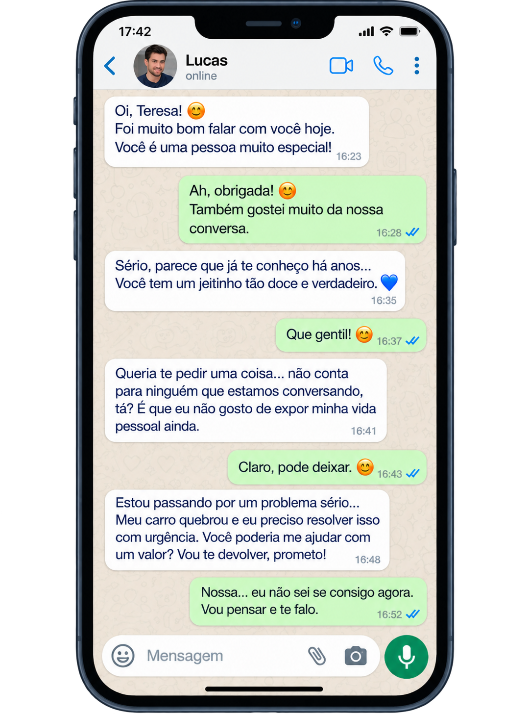

Você sabe reconhecer os sinais de um golpe do amor?
Aprenda, de um jeito simples a identificar quando um relacionamento online pode ser uma fraude. E o que fazer a respeito.
Começar a entender o temaFonte: Fórum Brasileiro de Segurança Pública — 20º Anuário Brasileiro de Segurança Pública 2026;
IBGE — PNAD Contínua 2025.
O que é o golpe do amor?
O golpe do amor (também chamado de estelionato sentimental) acontece quando alguém cria um perfil falso em redes sociais, constrói um relacionamento afetivo com a vítima e, quando a confiança já está estabelecida, começa a pedir dinheiro sob diversos pretextos.
Isso pode acontecer com qualquer pessoa. Por isso, o importante não é deixar de usar a internet, e sim saber reconhecer os sinais a tempo.
A tática do "Love Bombing"
O termo técnico usado para descrever a fase inicial do golpe é Love Bombing (bombardeio de amor): o golpista satura a vítima com elogios, atenção constante e declarações afetuosas intensas logo nos primeiros contatos. Isso cria um vínculo de confiança acelerado que reduz o julgamento crítico antes do pedido de dinheiro.
Por que esse tema importa? Veja os dados da pesquisa
Uso de internet por faixa etária
Fonte: CGI.br. (2025). TIC Domicílios 2025 — Indicador C2 (coleta entre março e agosto de 2025).
Estelionato por meio eletrônico no Brasil
Crescimento de 20,6% em um ano. Fonte: Fórum Brasileiro de Segurança Pública, 20º Anuário Brasileiro de Segurança Pública 2026 — Tabela de estelionato por meio exclusivamente eletrônico.
Ter acesso à internet não é o mesmo que saber verificar
Fonte: Núcleo de Informação e Coordenação do Ponto BR (NIC.br). (2025). Pesquisa TIC Domicílios 2025 — Indicador I1A (categorias podem se sobrepor).
Tudo começa com uma mensagem...
Você conseguiria identificar quando uma conversa deixa de ser apenas uma conversa? Veja a conversa e descubra os sinais que podem indicar um possível golpe.
Teresa, 67 anos

Nota metodológica: Imagem e narrativa fictícias desenvolvidas com auxílio de inteligência artificial (ChatGPT/OpenAI), utilizadas exclusivamente para fins educativos neste projeto.
Como o golpe acontece: as fases
O golpe segue um padrão de manipulação psicológica gradual. Conhecer essas fases ajuda a identificar o problema antes do prejuízo financeiro.
Perfil falso e sedutor
Fotos atraentes (muitas vezes roubadas) e identidade convincente — profissional no exterior, militar, artista.
Love Bombing
Elogios e declarações de amor intensas e rápidas, criando um vínculo de confiança acelerado.
Isolamento
Pedido de sigilo em relação à família e amigos, reduzindo a verificação externa.
Falsa emergência financeira
Pedido de dinheiro urgente sob pretextos diversos — alfândega, saúde, viagem.
Desaparecimento
O golpista some após obter o dinheiro, ou segue pedindo mais.
O que fazer diante de uma situação suspeita
Sempre que uma conversa online despertar dúvida, siga esta sequência:
Pare
Não tome nenhuma decisão financeira no calor da emoção ou da pressa.
Verifique
Pesquise a foto e as informações do perfil. Peça uma videochamada.
Converse
Conte a situação para uma pessoa de confiança antes de decidir.
Decida
Só depois de checar tudo, decida com calma — sem pressão de ninguém.
A jornada completa de prevenção
Recebe contato
Um perfil novo demonstra interesse.
Percebe intensidade / segredo
Nota o afeto acelerado ou o pedido de sigilo.
Surge urgência ou pedido
Aparece uma emergência financeira.
Interrompe a decisão
Não age imediatamente sob pressão.
Verifica e conversa
Checa informações e busca uma segunda opinião.
Decide sem pressão
Toma a decisão final com calma e autonomia.
Principais sinais de alerta
Amor rápido demais
Declarações intensas de amor em poucos dias de conversa, antes de um encontro presencial.
Evita videochamada
Sempre tem uma desculpa para não aparecer ao vivo, mesmo mantendo contato diário.
Pede sigilo
Sugere manter o relacionamento em segredo da família e dos amigos.
Pede dinheiro com urgência
Surge uma emergência que, segundo ele, só o seu dinheiro pode resolver.
Onde denunciar
- Delegacia de Crimes Cibernéticos do seu estado
- SaferNet Brasil (safernet.org.br)
- Procon, quando houver perda financeira associada a serviços
- Ferramenta de denúncia da própria rede social
Já sabe reconhecer esses sinais?
Teste o que você aprendeu no nosso quiz interativo "Identifique o Golpe" — com histórias em quadrinhos e situações reais.
Jogar o quiz agoraTransparência sobre a pesquisa
Este conteúdo foi construído a partir da pesquisa e do escopo desenvolvidos pela Squad 5, combinados a dados oficiais e literatura científica sobre fraude e engenharia social contra pessoas idosas.
- NIC.br/Cetic.br — TIC Domicílios 2024 (indicadores C2 e I1A)
- Fórum Brasileiro de Segurança Pública — 19º Anuário Brasileiro de Segurança Pública 2025
- Shang et al. (2022), Shao et al. (2019), Whitty (2013), Burda, Allodi & Zannone (2024), Oh et al. (2021) — literatura científica sobre fraude e alfabetização digital